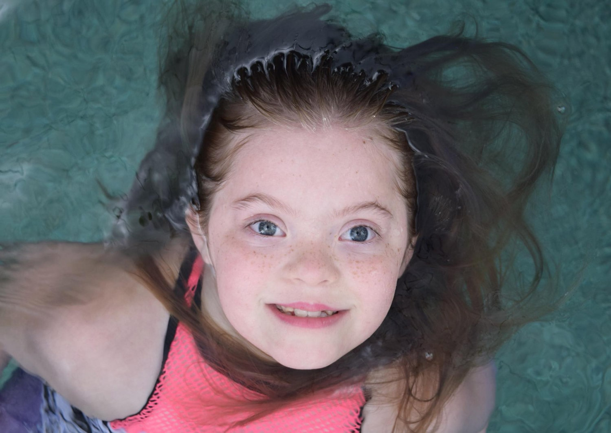

Brogan
America Down syndromeBrogan took her first steps when she was 27 months old; last year she walked the runway at New York Fashion Week and got to meet her hero-Madeline Stuart!
Brogan is a 10 year old ballerina, gymnast, cheerleader, actress and model. She is grateful to have the opportunity to do what she loves and hopes to continue to promote diversity, inclusion and awareness. Brogan has modeled swimwear, dancewear, kids fashion and has covered several magazines. She was thrilled to be cast in a LEGOLAND commercial and as a ballerina in the short film Samiya.
Brogan is proving that a diagnosis of Down syndrome does not hold you back when you are chasing your dreams.
Get involved Back to all stories